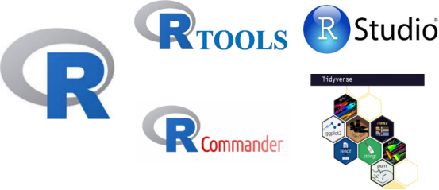

install.packages("jsonlite", type = "source")
install.packages("psych", type = "source")
install.packages("geosphere", type = "source")
library(jsonlite)
library(psych)
library(geosphere)Instalando o R, RStudio e Rtools
Criando um ambiente eficiente para uso da Linguagem R

1 Introdução
A Linguagem de Programação R é uma ferramenta essencial para análise de dados e estatística, sendo amplamente utilizada por cientistas e pesquisadores. Para maximizar sua eficácia, é crucial instalar adequadamente o R, juntamente com a IDE RStudio e o Rtools. O RStudio facilita o desenvolvimento de código, enquanto o Rtools auxilia na instalação de pacotes, garantindo um ambiente computacional eficiente e livre de bugs. O Rtools é um conjunto de ferramentas necessárias para compilar pacotes R que contêm códigos feitos em outras linguagens de programação, como C++ ou Fortran.
R + RStudio: Com essa combinação, os usuários desfrutam de um ambiente de desenvolvimento integrado, otimizando a escrita e a execução de códigos R.
R + Rtools: A instalação correta do Rtools permite a construção e instalação de pacotes R adicionais, expandindo as possibilidades de análise e melhorando o desempenho do ambiente R.
2 Procedimentos de Instalação e configuração do R
A instalação da Linguagem de Programação R e de seus pacotes no Sistema Operacional Windows ficou mais fácil a partir do lançamento da versão do Rtools42, obtida a partir da página oficial do R-CRAN, eliminando a necessidade de configurar o path nas variáveis de ambiente . Siga os passos a seguir:
Baixe o R e o Rtools da página oficial do R-CRAN
Baixe o RStudio da página oficial.
Crie uma pasta em C:\ para instalar o R e o RStudio.
Instale o R como administrador, clicando com o botão direito do mouse e em seguida selecione a pasta C:\R\R-4.5.0 (ou versão mais atualizada) para instalação na pasta correta.
- Escolha o idioma português,
- Desmarque a opção de criar atalho e aguarde a conclusão da instalação.
- Após instalação, acesse a pasta C:\R\, clique com o botão direito sobre a subpasta R-4.5.0 e vá em
Propriedadese desmarque a opção “Somente Leitura” e clique Aplicar.
Instale o RStudio como administrador, ajustando a pasta C:\R\RStudio para a instalação e siga as instruções, dando
Nextnas opções.Após instalar o R e RStudio, instale o Rtools (a versão atual é a Rtools 4.5, em conformidade com as versões do R, ou seja, R-4.5.X), também como Administrador e siga as instruções na tela, clicando
Next ou Ok.Após as instalçaões dos arquivos executáveis, é o momento de testa se a instalação ocorreu adequadamento, tentando instalar pacotes com códigos-fonte que necessitam de compilação. Abaixo seguem três exemplos de instalação de pacotes que precisam de compilação. Você não necessariamente desses pacotes, sendo somente a título de verificação de suas instalações, as quais se tornariam problemáticas se não houver configurado corretamente o Rtools no sistema operacional Windows. Configurações para Sistema Linux ou Mac OS seguem outros procedimentos.
- Instale o devtools e o Rcmdr.
install.packages("devtools")
library(devtools)
install.packages("Rcmdr", dependencies = T)
library(Rcmdr)- Instale um pacote do Bioconductor.
Antes de fazer a instalação, atualize os pacotes já instalados.
if (!require("BiocManager", quietly = TRUE))
install.packages("BiocManager")
BiocManager::install("EBImage")
library(EBImage)- Instale o h2o para redes neurais.
install.packages("h2o")
library(h2o)- Instale o tinytex para criar arquivos pdf com Rmarkdown e Quarto
install.packages("tinytex")
tinytex::install_tinytex()- Instale o conjunto de pacotes tidyverse.
install.packages("tidyverse")
library(tidyverse)3 Configurações em outros sistemas operacionais
O Rtools é um conjunto de ferramentas projetadas especificamente para o sistema operacional Windows e, portanto, não é necessário instalar ou configurar o Rtools em um Mac OS ou um Sistema Linux. Em vez disso, no Mac OS, é necessário instalar o Xcode, um conjunto de ferramentas de desenvolvimento de software da Apple. O Xcode inclui compiladores, ferramentas de depuração, bibliotecas e outros recursos que são essenciais para o desenvolvimento de software no Mac OS. Depois de instalar o Xcode, o R pode usar essas ferramentas para compilar pacotes que contêm código C++ ou Fortran.
Assim como no Mac OS, no sistema Linux, é necessário instalar um conjunto de ferramentas de desenvolvimento de software para compilar pacotes R que contenham código C++ ou Fortran. A maioria das distribuições Linux vem com um conjunto básico de ferramentas de desenvolvimento de software instaladas, incluindo um compilador C/C++, ferramentas de depuração e bibliotecas. No entanto, para compilar pacotes R que contenham código C++ ou Fortran, pode ser necessário instalar pacotes adicionais. Para instalar as ferramentas de desenvolvimento necessárias para compilar pacotes R que contêm código C++ ou Fortran no Linux, você deve seguir instruções específicas de sua distribuição. Por exemplo, para Debian/Ubuntu, execute o seguinte comando no terminal:
sudo apt-get install build-essential.
É importante ressaltar que, dependendo do pacote R que você deseja compilar, pode ser necessário instalar bibliotecas adicionais e pacotes de desenvolvimento específicos para as dependências do pacote. Em geral, você deve consultar a documentação do pacote R que deseja compilar para obter instruções específicas de instalação.
4 Recomendações finais
Após a instalação bem-sucedida do R, RStudio e Rtools, e a configuração de pacotes essenciais, o usuário está pronto para mergulhar no mundo da ciência de dados e análises estatísticas. Com esse ambiente robusto e eficiente, é possível explorar uma ampla gama de técnicas e metodologias. Para iniciantes na Linguagem R, é recomendado buscar cursos ou tutoriais online para se familiarizar com a sintaxe e as funções básicas da linguagem, além de participar de comunidades e fóruns para trocar experiências e aprender com outros profissionais da área.